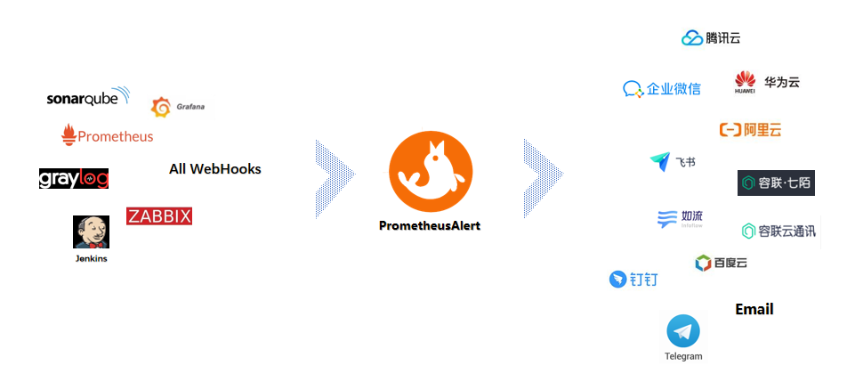
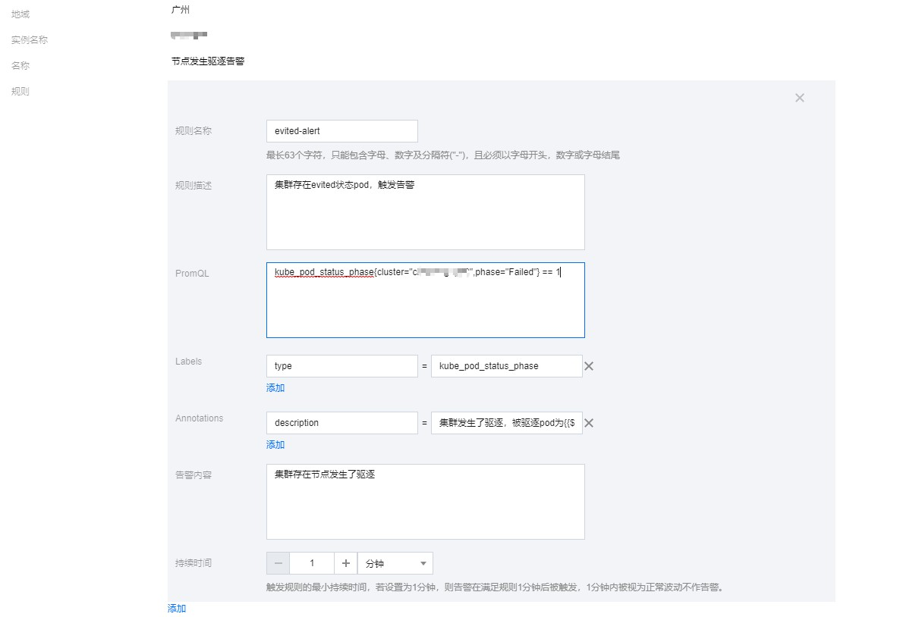
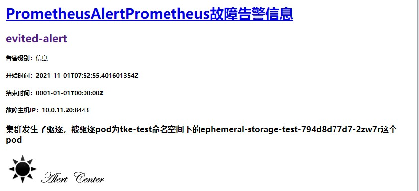
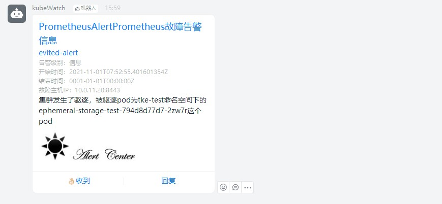

PrometheusAlert是开源的运维告警中心消息转发系统，支持主流的监控系统Prometheus、Zabbix，日志系统Graylog2，Graylog3、数据可视化系统Grafana、SonarQube。阿里云-云监控，以及所有支持WebHook接口的系统发出的预警消息，支持将收到的这些消息发送到钉钉，微信，email，飞书，腾讯短信，腾讯电话，阿里云短信，阿里云电话，华为短信，百度云短信，容联云电话，七陌短信，七陌语音，TeleGram，百度Hi(如流)等。
github地址：https://github.com/feiyu563/PrometheusAlert

PrometheusAlert支持多种告警源配置，一般我们在prometheus配置告警发送都是通过alertmanager，下面我们来说说用alertmanager调PrometheusAlert的webhook来发生告警。我们的k8s环境是腾讯云的tke集群，prometheus监控服务用的腾讯云云原生监控服务。云原生监控服务用的自建的alertmanager来发送告警。如果云原生服务需要用自建的alertmanager，要么在创建时候配置好，还有就是提工单让后台进行配置修改。
部署PrometheusAlert
1
2
3
| # kubectl create ns monitoring
# kubectl apply -n monitoring -f
# https://raw.githubusercontent.com/feiyu563/PrometheusAlert/master/example/kubernetes/PrometheusAlert-Deployment.yaml
|
参考上面命令直接部署PrometheusAlert到k8s集群中即可。
部署alertmanager配置webhook
1
2
3
4
5
6
7
8
9
10
11
12
13
14
15
16
17
18
19
20
21
22
23
24
25
26
27
28
29
30
31
32
33
34
35
36
37
38
39
40
41
42
43
44
45
46
47
48
49
50
51
52
53
54
55
56
57
58
59
60
61
62
63
64
65
66
67
68
69
70
71
72
73
74
75
76
77
78
79
80
81
82
83
84
85
86
87
88
89
90
91
92
93
94
95
96
97
98
99
100
101
102
103
| apiVersion: apps/v1
kind: Deployment
metadata:
labels:
k8s-app: alertmanager
qcloud-app: alertmanager
name: alertmanager
namespace: monitor
spec:
progressDeadlineSeconds: 600
replicas: 1
revisionHistoryLimit: 10
selector:
matchLabels:
k8s-app: alertmanager
qcloud-app: alertmanager
strategy:
rollingUpdate:
maxSurge: 1
maxUnavailable: 0
type: RollingUpdate
template:
metadata:
creationTimestamp: null
labels:
k8s-app: alertmanager
qcloud-app: alertmanager
spec:
containers:
- args:
- --config.file=/etc/alertmanager/config.yml
- --storage.path=/alertmanager/data
image: prom/alertmanager:v0.15.3
imagePullPolicy: Always
name: alertmanager
resources:
limits:
cpu: 500m
memory: 1Gi
requests:
cpu: 250m
memory: 256Mi
securityContext:
privileged: false
terminationMessagePath: /dev/termination-log
terminationMessagePolicy: File
volumeMounts:
- mountPath: /etc/alertmanager
name: alertcfg
dnsPolicy: ClusterFirst
imagePullSecrets:
- name: qcloudregistrykey
restartPolicy: Always
schedulerName: default-scheduler
securityContext: {}
terminationGracePeriodSeconds: 30
volumes:
- configMap:
defaultMode: 511
name: alertmanager
name: alertcfg
---
apiVersion: v1
data:
config.yml: |
global:
resolve_timeout: 5m
route:
group_by: ['alertname']
group_interval: 1m
group_wait: 10s
repeat_interval: 1m
receiver: 'prometheusalert-all'
receivers:
- name: 'prometheusalert-all'
webhook_configs:
- url: 'http://prometheus-alert-center.monitoring:8080/prometheus/router?email=xxxx@163.com&ddurl=https://oapi.dingtalk.com/robot/send?access_token=xxxxx'
kind: ConfigMap
metadata:
name: alertmanager
namespace: monitor
---
apiVersion: v1
kind: Service
metadata:
annotations:
service.kubernetes.io/qcloud-loadbalancer-internal-subnetid: subnet-xxxx
name: alertmanager
namespace: monitor
spec:
ports:
- name: 9093-9093-tcp
nodePort: 32552
port: 9093
protocol: TCP
targetPort: 9093
selector:
k8s-app: alertmanager
qcloud-app: alertmanager
sessionAffinity: None
type: LoadBalancer
|
这里我们用一个内网的clb暴露alertmanager服务是为了给云原生监控实例调用。下面我们来讲讲不通告警渠道怎么配置。
邮件告警发送
邮件告警发送，需要在prometheus-alert-center-conf这个configmap中修改如下配置，配置服务器邮件发生地址。
1
2
3
4
5
6
7
8
9
10
11
12
13
14
15
|
open-email=1
Email_host=smtp.163.com
Email_port=25
Email_user=nwx_qxxxx@163.com
Email_password=xxxxxx
Email_title=运维告警
|
具体的webhook如下，多个邮箱用逗号分隔开
1
| http://prometheus-alert-center.monitoring:8080/prometheus/router?email=xxxx@163.com,xxxx1@163.com
|
钉钉告警发送
钉钉告警发送，需要在prometheus-alert-center-conf配置开启钉钉告警发送，默认配置开启的
1
2
3
4
5
6
| #是否开启钉钉告警通道,可同时开始多个通道0为关闭,1为开启
open-dingding=1
#默认钉钉机器人地址
ddurl=https:
#是否开启 @所有人(0为关闭,1为开启)
dd_isatall=1
|
然后参考文档https://github.com/feiyu563/PrometheusAlert/blob/master/doc/readme/dingding.md配置机器人，获取对应token。
具体的webhook如下
1
| http://prometheus-alert-center.monitoring:8080/prometheus/router?ddurl=https://oapi.dingtalk.com/robot/send?access_token=xxxxx
|
企业微信告警发送
企业微信告警发送，需要在prometheus-alert-center-conf配置开启企业微信告警发送，默认配置开启的
1
2
3
4
|
open-weixin=1
wxurl=https://qyapi.weixin.qq.com/cgi-bin/webhook/send?key=xxxxx
|
然后参考文档https://github.com/feiyu563/PrometheusAlert/blob/master/doc/readme/wechat.md配置企业微信机器人，并获取key。
具体的webhook如下
1
| http://prometheus-alert-center.monitoring:8080/prometheus/router?wxurl=https://qyapi.weixin.qq.com/cgi-bin/webhook/send?key=xxxxx
|
如果你想同时发送告警到不同渠道，可以将webhook的url拼接起来
1
| http://prometheus-alert-center.monitoring:8080/prometheus/router?email=xxxx@163.com,xxxx1@163.com&ddurl=https://oapi.dingtalk.com/robot/send?access_token=xxxxx&wxurl=https://qyapi.weixin.qq.com/cgi-bin/webhook/send?key=xxxxx
|
测试告警发送

配置告警的时候需要注意一点，告警的信息需要配置在annotations的description字段中，配置在告警内容是不发送的。
1
2
3
4
5
6
7
8
9
| groups:
- name: 节点发生驱逐告警
rules:
- alert: evited-alert
expr: kube_pod_status_phase{cluster="cls-xxxxx",phase="Failed"} == 1
labels:
type: kube_pod_status_phase
annotations:
description: "集群发生了驱逐，被驱逐pod为{{$labels.namespace}}命名空间下的{{$labels.pod}}这个pod"
|
当我们的集群中存在被驱逐的pod后就可以收到告警信息，我这里配置了钉钉和邮件告警，具体效果可以看下图。


我这里只讲了最常用的用webhook访问发送告警，其实PrometheusAlert还有多种告警方式，具体的使用方法参考github上的文档说明。

欢迎访问 Vashon 的博客，博客和文章在完善中，请大家耐心等待。 若有问题或者有好的建议欢迎留言，笔者看到之后会及时回复。